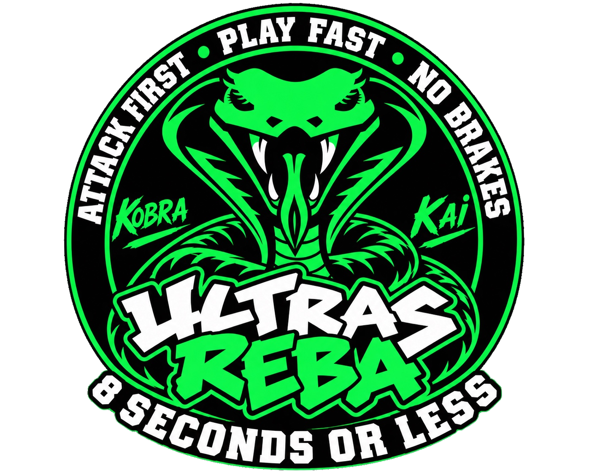

IL CAMPIONATO.
LA NOSTRA PASSIONE.
25 squadre. 5 gironi. Una stagione da seguire, partita dopo partita.

Caricamento calendario…
RISULTATI & PARTITE
CLASSIFICHE DEI GIRONI
Classifiche calcolate dai risultati disponibili. Le parità saranno ordinate secondo i criteri ufficiali quando applicabili.
PLAY-IN TRACKER
Proiezione dinamica basata sulle posizioni attuali, non qualificazione matematica. Limitazioni regolamentari da verificare.
⚑ Il regolamento prevede una sola squadra per società nella fase titolo e restrizioni per atlete in deroga.
CALENDARIO REBA
SIMULATORE RISULTATI
Seleziona una partita e assegna un punteggio ipotetico. Le classifiche e il play-in si aggiorneranno soltanto in questa sessione.
STATISTICHE DI STAGIONE
SQUADRE & PALESTRE
25 squadre nei 5 gironi. Le sedi delle gare sono riportate nel calendario ufficiale FIP; mappa interattiva condivisa da Google My Maps.
FASE TITOLO
PLAY-IN
Cinque spareggi incrociati
GIRONE TOP
5 vincenti + migliore perdente
FINAL FOUR
Semifinali e finale